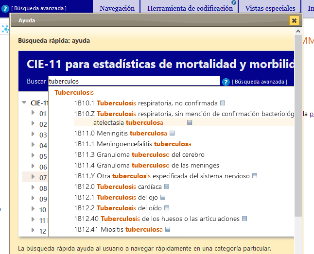
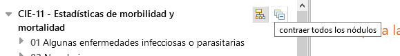

ES
ES
El navegador de la CIE-11 es un sitio web que permite a los usuarios ver el contenido de la CIE-11.
En este manual del usuario encontrará detalles sobre el uso del sitio. Puede explorar el manual del usuario haciendo clic en los enlaces que se encuentran en el módulo de la izquierda o regresar al navegador de la CIE-11 usando el menú en la parte superior de la pantalla. A continuación encontrará información importante que lo ayudará a usar el sitio de una manera más eficiente.
El navegador de la CIE-11 incluye ayuda contextual a la cual se puede acceder haciendo clic en el ícono , ubicado en diferentes lugares de la aplicación. Al hacer clic en ese ícono se abre una ventana con información, que puede cerrarse haciendo clic en la X que se encuentra en la esquina superior derecha de la ventana.
Otra funcionalidad útil es la ayuda contextual. Al posicionar el puntero del ratón en cualquier ícono o botón por más de un segundo, el sistema proporciona más información sobre su funcionalidad.
